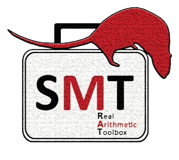

|  |
SMT-RAT
The Satisfiability–Modulo–Theories |
||
SMT-RAT is a C++ toolbox offering theory solver modules for the development of SMT solvers for nonlinear real arithmetic (NRA).
Install the required packages: CMake, CLN, GiNaC, and GiNaCRA. We recommend to build the project in a separate build directory. The following installation instructions are based on this recommendation.
In order to build the GUI, install Ant and Java and type:
In order to build the API documentation, install Doxygen and type:
sudo apt-get install autoconf libtool g++ bison flex).
In order to build OpenSMT with SMT-RAT, build and install the SMT-RAT library so that you linker can find it. Then, we recommend to follow these instructions:
After installation run
with EXAMPLE.smt2 being any example of the following benchmark sets: A detailed description of SMT-RAT can be found in the SMT-RAT manual. |
|||
|
Last Update: |
|||